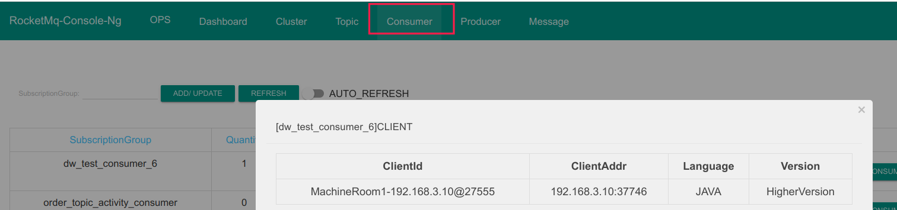
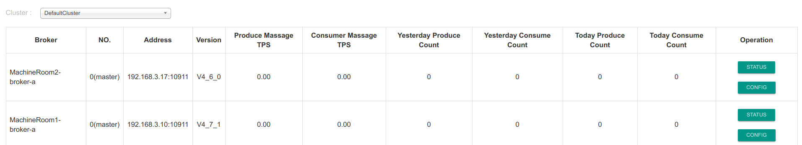
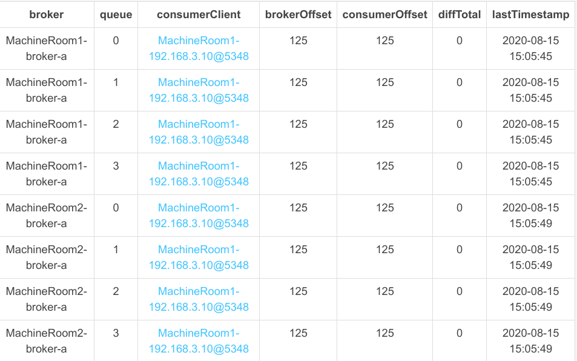
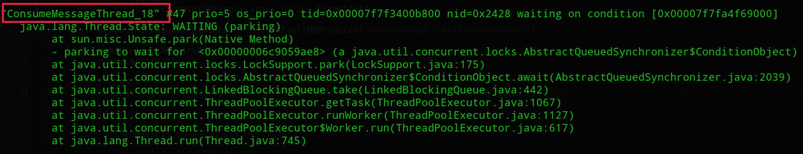
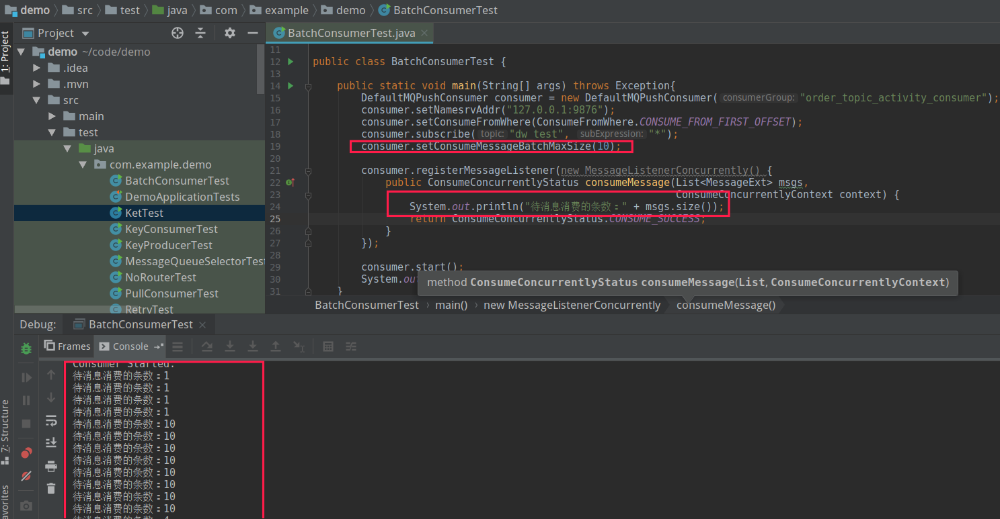
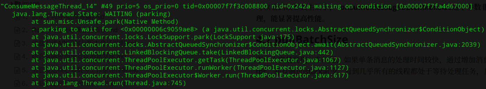
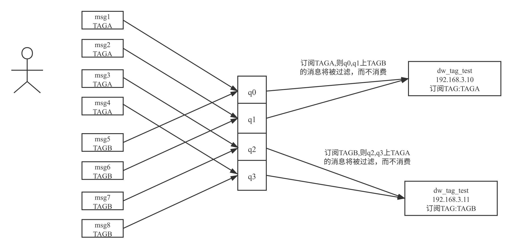
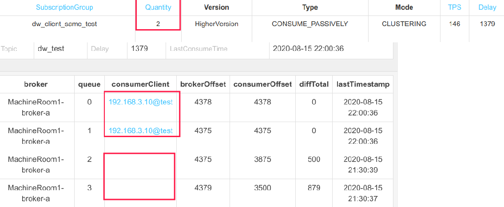

- 01 搭建学习环境准备篇.md.html
- 02 RocketMQ 核心概念扫盲篇.md.html
- 03 消息发送 API 详解与版本变迁说明.md.html
- 04 结合实际应用场景谈消息发送.md.html
- 05 消息发送核心参数与工作原理详解.md.html
- 06 消息发送常见错误与解决方案.md.html
- 07 事务消息使用及方案选型思考.md.html
- 08 消息消费 API 与版本变迁说明.md.html
- 09 DefaultMQPushConsumer 核心参数与工作原理.md.html
- 10 DefaultMQPushConsumer 使用示例与注意事项.md.html
- 11 DefaultLitePullConsumer 核心参数与实战.md.html
- 12 结合实际场景再聊 DefaultLitePullConsumer 的使用.md.html
- 13 结合实际场景顺序消费、消息过滤实战.md.html
- 14 消息消费积压问题排查实战.md.html
- 15 RocketMQ 常用命令实战.md.html
- 16 RocketMQ 集群性能摸高.md.html
- 17 RocketMQ 集群性能调优.md.html
- 18 RocketMQ 集群平滑运维.md.html
- 19 RocketMQ 集群监控（一）.md.html
- 20 RocketMQ 集群监控（二）.md.html
- 21 RocketMQ 集群告警.md.html
- 22 RocketMQ 集群踩坑记.md.html
- 23 消息轨迹、ACL 与多副本搭建.md.html
- 24 RocketMQ-Console 常用页面指标获取逻辑.md.html
- 25 RocketMQ Nameserver 背后的设计理念.md.html
- 26 Java 并发编程实战.md.html
- 27 从 RocketMQ 学基于文件的编程模式（一）.md.html
- 28 从 RocketMQ 学基于文件的编程模式（二）.md.html
- 29 从 RocketMQ 学 Netty 网络编程技巧.md.html
- 30 RocketMQ 学习方法之我见.md.html
- 捐赠
10 DefaultMQPushConsumer 使用示例与注意事项
上篇已详细介绍了 DefaultMQPushConsumer 的核心属性与消息消费相关的理论，本篇将重点介绍在使用过程中容易出现的问题，并加以解决。
ConsumeFromWhere 注意事项
下面首先先看一段 RokcetMQ PUSH 模式消费者的常见使用方式：

构建需要通过 setConsumeFromWhere(…) 指定从哪消费，正如上篇提到的，RocketMQ 支持从最新消息、最早消息、指定时间戳这三种方式进行消费。大家可以思考一下，如果一个消费者启动运行了一段时间，由于版本发布等原因需要先停掉消费者，代码更新后，再启动消费者时消费者还能使用上面这三种策略，从新的一条消息消费吗？如果是这样，在发版期间新发送的消息将全部丢失，这显然是不可接受的，要从上一次开始消费的时候消费，才能保证消息不丢失。
故 ConsumeFromWhere 这个参数的含义是，初次启动从何处开始消费。更准确的表述是，如果查询不到消息消费进度时，从什么地方开始消费。
所以在实际使用过程中，如果对于一个设置为 CONSUME_FROM_FIRST_OFFSET 的运行良久的消费者，当前版本的业务逻辑进行了重大重构，而且业务希望是从最新的消息开始消费，想通过如下代码来实现其业务意图，则显然是不成功的。
consumer.setConsumeFromWhere(ConsumeFromWhere.CONSUME_FROM_LAST_OFFSET);
上面做法是错误的，要达到业务目标，需要使用 RocketMQ 提供的重置位点，其命令如下：
sh ./mqadmin resetOffsetByTime -n 127.0.0.1:9876 -g CID_CONSUMER_TEST -t TopicTest -s now
其中参数说明如下：
- -n：NameServer 地址
- -g：消费组名称
- -t：主题名称
- -s：时间戳，可选值为 now、时间戳（毫秒）、yyyy-MM-dd#HH:mm:ss:SSS
当然也可以通过 RocketMQ-Console 重置位点，操作如下图所示：

基于多机房队列负载算法
在我们实际中通常会选用平均分配算法 AllocateMessageQueueAveragely、AllocateMessageQueueAveragelyByCircle，因为这两种方案实现非常简单。在这里想再次强调一下，一致性 Hash 算法在服务类负载方面优势不大，又复杂。本节主要是探讨一下 RocketMQ 在多机房方面的支持。
在笔者所在的公司，目前多机房采取的是，在同城相距不远的两个地方分别建一个机房，主要是为了避免入口网络故障导致所有业务系统不可用，给广大快递员、各中转中心操作带来严重的影响。故采用的网络架构如下图所示：

两个网络机房之间可以通过专线访问，网络延时为 1~2ms。本场景同一时间只有一个机房会有外网流量。
在 RocketMQ 集群在多机房部署方案中本场景下，将一个 RocketMQ 集群部署在两个机房中，即每一个机房都各自部署一个 Broker，两个 Broker 共同承担消息的写入与消费。并且在两个机房都部署了两个消费者。
从消费者的角度来看，如果采取平均分配，特别是采取 AllocateMessageQueueAveragelyByCircle 方案，会出现消费者跨消费这种情况，如果能实现本机房的消费者优先消费本机房中的消息，可有效避免消息跨机房消费。值得庆幸的是，RocketMQ 设计者已经为我们了提供了解决方案——AllocateMachineRoomNearby。
接下来我们来介绍一下，如何使用 AllocateMachineRoomNearby 队列负载算法。
首先既然是多机房，对于消费过程中几个主要的实体对象（Broker）、消费者，我们必须能识别出哪个 Broker 属于哪个机房，故首先我们需要做如下两件事情。
\1. 对 Broker 进行重命名，将 Broker 的命名带上机房的信息，主要是修改 broker.conf 配置文件，例如：
brokerName = MachineRoom1-broker-a
即 Broker 的名称统一按照（机房名 brokerName）。
\2. 对消息消费者的 clientId 进行重新改写，同样使用机房名开头，我们可以通过如下代码改变 clientId。
consumer.setClientIP("MachineRoom1-" + RemotingUtil.getLocalAddress());
consumer 默认的 clientIP 为 RemotingUtil.getLocalAddress()，即本机的 IP 地址，这样客户端的 cid 如下图所示：

接下来我们简单看看一下 AllocateMachineRoomNearby 的核心属性，如下图所示：

其含义分别如下：
1. AllocateMessageQueueStrategy allocateMessageQueueStrategy
内部分配算法，可以看成机房就近分配算法，其实是一个代理，内部还是需要持有一种分配算法，例如平均分配算法。
2. MachineRoomResolver machineRoomResolver
多机房解析器，即从 brokerName、客户端 clientId 中识别出所在的机房。
本篇的测试场景集群如下：

测试代码如下：
public static void main(String[] args) throws InterruptedException, MQClientException {
DefaultMQPushConsumer consumer = new
DefaultMQPushConsumer("dw_test_consumer_6");
consumer.setNamesrvAddr("127.0.0.1:9876");
consumer.setClientIP("MachineRoom1-" + RemotingUtil.getLocalAddress());
// consumer.setClientIP("MachineRoom2-" + RemotingUtil.getLocalAddress());
consumer.setConsumeFromWhere(ConsumeFromWhere.CONSUME_FROM_LAST_OFFSET);
consumer.subscribe("machine_topic_test", "*");
AllocateMessageQueueAveragely averagely = new AllocateMessageQueueAveragely();
AllocateMachineRoomNearby.MachineRoomResolver machineRoomResolver = new
AllocateMachineRoomNearby.MachineRoomResolver() {
@Override public String brokerDeployIn(MessageQueue messageQueue) {
return messageQueue.getBrokerName().split("-")[0];
}
@Override public String consumerDeployIn(String clientID) {
return clientID.split("-")[0];
}
};
consumer.setAllocateMessageQueueStrategy(new
AllocateMachineRoomNearby(averagely, machineRoomResolver));
consumer.registerMessageListener(new MessageListenerConcurrently() {
@Override
public ConsumeConcurrentlyStatus consumeMessage(List<MessageExt> msgs,
ConsumeConcurrentlyContext context) {
try {
System.out.printf("%s Receive New Messages: %s %n",
Thread.currentThread().getName(), msgs);
return ConsumeConcurrentlyStatus.CONSUME_SUCCESS;
} catch (Throwable e) {
e.printStackTrace();
return ConsumeConcurrentlyStatus.RECONSUME_LATER;
}
}
});
consumer.start();
System.out.printf("Consumer Started.%n");
}
说明：上述代码需要打包，尽量在不同的机器上运行，并且需要给修改一下 clientIp。
运行后队列的负载情况如下：

那如果位于 MachineRoom2 机房中的消费者停掉，那机房 2 中的消息能继续被消费吗？我们现在将机房 2 中的消费者停掉，我们再来看其队列负载情况，如下图所示：

发现机房１中的消费者会能继续消费机房 2 中的消息，从这里可以看出 AllocateMachineRoomNearby 队列负载队列只是同机房优先，如果一个机房中没有存活的消费者，该机房中的队列还是会被其他机房中的消费者消费。
在 RocketMQ 中还提供了另外一种关于多机房队列负载情况，即 AllocateMessageQueueByMachineRoom，可以为每一消费者指定可以消费的机房，即通过调用 setConsumeridcs(…) 方法指定某一个消费者消费哪些机房的消息，形成一个逻辑概念的大机房，为了节省篇幅，在本篇中就不再重复给出演示，其使用方法类似。
消费组线程数设置注意事项
在 RocketMQ 中，每一个消费组都会启动一个线程池用来实现消费端在消费组的隔离，RocketMQ 也提供了 consumeThreadMin、consumeThreadMax 两个参数来设置线程池中的线程个数，但是由于线程池内部持有的队列为一个无界队列，导致 consumeThreadMax 大于 consumeThreadMin，线程个数最大也只能 consumeThreadMin 个线程数量，故在实践中，往往会将这两个值设置为相同，避免给大家带来一种误解，在消息端消息很多的情况，会创建更多的线程来提高消息的处理速率。
小技巧：RocketMQ 中的消费组线程的名称会以 ConsumeMessageThread_ 开头，例如下图。

批量消费注意事项
RocketMQ 支持消息批量消费，在消费端与批量消费相关的两个参数分别为：
- pullBatchSize：消息客户端一次向 Broker 发送拉取消息每批返回最大的消息条数，默认为 32。
- consumeMessageBatchMaxSize：提交到消息消费监听器中的消息条数，默认为 1。
consumeMessageBatchMaxSize
默认情况下一次消息会拉取 32 条消息，但业务监听器收到的消息默认一条，为了更直观对其了解，现给出如下示例代码：

如果将 consumeMessageBatchMaxSize 设置 10，其运行效果如下图所示：

可以看到该参数生效了，consumeMessageBatchMaxSize 这个参数非常适合批处理，例如结合数据库的批处理，能显著提高性能。
pullBatchSize
大家发现了一个问题，如果单条消息的处理时间较快，通过增加消费组线程个数无法显著提高消息的消费 TPS，并且通过 jstack 命令，看到几乎所有的线程都处于等待处理任务，其截图类似如下：

此种情况说明线程都“无所事事”，应该增大其工作量，自然而然地需要增大每一批次消息拉取的数量。故尝试每一次消息拉取 100 条，每批消费 50 条。即通过如下代码进行设置：
consumer.setPullBatchSize(100);
consumer.setConsumeMessageBatchMaxSize(200);
这里设置 consumeMessageBatchMaxSize 的值大于 pullBatchSize 的主要目的，就是验证每一次拉取的消息，因为如果 consumeMessageBatchMaxSize 大于 pullBatchSize，那每次批处理的消息条数等于 pullBatchSize，如果 consumeMessageBatchMaxSize 小于 pullBatchSize，会在客户端分页，然后尽最大可能一次传入 consumeMessageBatchMaxSize 条消息。
为了确保有足够的消息，在消息拉取之前，我建议先使用生产者压入大量消息。

发现每批拉取的条数最多不会超过 32，显然服务端有足够的消息够拉取。
这是因为 Broker 端对消息拉取也提供了保护机制，同样有参数可以控制一次拉取最多返回消息的条数，其参数主要如下：
int maxTransferCountOnMessageInMemory
如果此次消息拉取能全部命中，内存允许一次消息拉取的最大条数，默认值为 32 条。
int maxTransferBytesOnMessageInMemory
如果此次消息拉取能全部命中，内存允许一次消息拉取的最大消息大小，默认为 256K。
int maxTransferCountOnMessageInDisk
如果此次消息无法命中，内存需要从磁盘读取消息，则每一次拉取允许的最大条数，默认为 8。
int maxTransferBytesOnMessageInDisk
如果此次消息无法命中，内存需要从磁盘读取消息，则每一次拉取允许的消息总大小，默认为 64K。
故如果需要一次拉取 100 条消息，还需要修改 broker 端相关的配置信息，通常建议修只修改命中内存相关的，如果要从磁盘拉取，为了包含 Broker，maxTransferCountOnMessageInDisk、maxTransferBytesOnMessageInDisk 保持默认值。
如果使用场景是大数据领域，建议的配置如下：
maxTransferCountOnMessageInMemory=5000
maxTransferBytesOnMessageInMemory = 5000 * 1024
如果是业务类场景，建议配置如下：
maxTransferCountOnMessageInMemory=2000
maxTransferBytesOnMessageInMemory = 2000 * 1024
修改 Broker 相关配置后，再运行上面的程序，其返回结果如下：

订阅关系不一致导致消息丢失
在 RocketMQ 中，一个消费组能订阅多个主题，也能订阅多个 Tag，多个 Tag 用 || 分割，但同一个消费组中的所有消费者的订阅关系必须一致，不能一个订阅 TAGA，另外一个消费者却订阅 TAGB，其错误使用如下图所示：

上面的错误关键点在：两个 JVM 进程中创建的消费组名称都是 dw_tag_test，但其中一个消费组订阅了 TAGA，另外一个消费组订阅了 TAGB，这样会造成消息丢失（即部分消息未被消费），其证明如下图所示：

一条消息的 Tag 为 TAGA，并且消费组 dw_tag_test 其中一个消费者有订阅 TAGA，那为什么还会显示 CONSUMED_BUT_FILTERED，这个状态代表的含义是，该条消息不符合消息过滤规则被过滤了，其原理图如下所示：

其本质原因是，一个队列同一时间只会分配给一个消费者，这样队列上不符合的消息消费会被过滤，并且消息消费进度会向前移动，这样就会造成消息丢失。
消费者 clientId 不唯一导致不消费
RocketMQ 的 clientId 的生成规则与 Producer 一样，如果两者出现重复，也会出现问题，请看如下代码：

本示例中人为的构建了两个 clientID 相同的消费者，在实际生产过程中，可能由于 Docker 容器获取的是宿主机器的 id、获取进程号出现异常等，会造成宿主机上所有的消费者的 clientId 一样，会造成如下效果：

明明客户端有两个，但为什么有一半的队列没有分配到消费者呢？
这就是因为 clientID 相同导致的。我们不妨以平均分配算法为例进行思考，队列负载算法时，首先会向 NameServer 查询 Topic 的路由信息，这里会返回队列个数为 4，然后向 Broker 查询当前活跃的消费者个数，会返回 2，然后开始分配。队列负载算法分配时，首先会将队列，消费者的 cid 进行排序，第一消费者分配前面 2 个队列，第二个消费者分配后面两个队列，但由于两个 cid 是相同的，这样会造成两个消费者在分配队列时，都认为自己是第一个消费者，故都分配到了前 ２ 个队列，即前面两个队列会被两个消费者都分配到，造成消息重复消费，并且有些队列却无法被消费。
最佳实践：建议大家对 clientIP 进行定制化，最好是客户端 IP + 时间戳，甚至于客户端 IP + uuid。
小结
本篇详细介绍了 RocketMQ 队列负载机制，特别是演示了多机房队列负载机制，后面对 RocketMQ 常见的使用误区例如 ConsumeFromWhere、线程池大小、订阅关系不一致、消费者 clientID 相同、批量拉取等一一做了演示与原因分析，以及给出了解决方案。
© 2019 - 2023 Liangliang Lee. Powered by gin and hexo-theme-book.